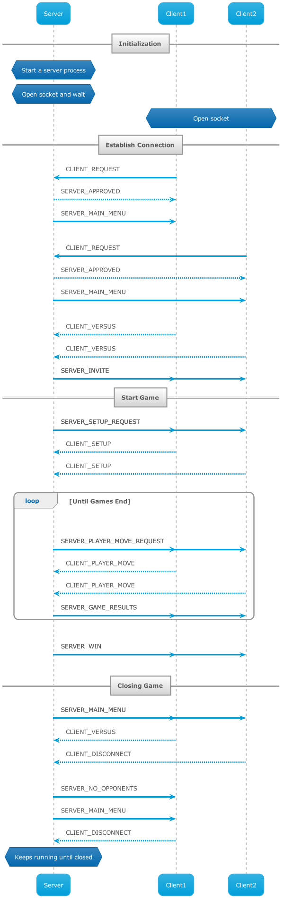

|
EX4
V4.0
Introduction to Operating Systems, or Introduction to Systems Programing
|


|
|
EX4
V4.0
Introduction to Operating Systems, or Introduction to Systems Programing
|
|

The purpose of of this excersise is to learn about inter process communication over the TCP/IP protocol.
Full detailes of the excersise instruction are located in the provided _ISP_HW4_2020.pdf_ file provided by course staff. And deep insight on the code is found here. This is code documentation which was generated by Doxygen.
Implmenting a Bulls Cows game with a server and two clents communicating over TCP/IP protocol.
To accomplish the task, two seperated projects with some shared code will are created.
This document will explain on the entire solution without diving into the specifics of each project. For full inpormation on each please visit server and client.
A functional flow of the solution or game is described below:

The solution is divided to two progrmas: server and client, each of them will have a seperate project. The **main()** functions are implemented at _server.c_ and _client.c_.
Both for functionality and for code reuse, the projects will have common files and header which will be shared.
Nativly the common code will host the interface between the two programs, which includes the communication protocol described in the instructions pdf.
What should go into common code?
Any utilities and functionalities that are used by BOTH programs.
hint: if the function or defenition is used only by one program, it shouldn't go into common code. Also if a runtime decission is based on user, it is not common!
Here are basic file structure conventions:
ext.h_, are used to expose definition, fucntion and types. Should only include the most basic libs.Template files of all three types are located under: resources/template
To achieve a working and clear code, we will try to follow the below guidelines:
print_error_msg() for this purpose.DEBUG_PRINT() which will propogate the parameters to printf function, DEBUG_PRINT_ON** is defined, and will do nothing otherwise.To enable debug printing, with easier toggle on/off of specific verbosity levels.
Each DEBUG_PRINT statment will be assosicated with a specific verbosity level.
A global **DEBUG_VERBOSITY_LEVEL** will define how many prints of logs we wish to see.
The higher it is define, the more prints should be shown.
To fully utilize this mechanism, each print statement should think out the how needed are those prints.
For example, DEBUG_PRINT_FUNCTION_START() assigns level one, because it is useally usefull to have a function
start and end prints - lets you know a specific function was called and executed.
As a rule of thumb, if the print statment is located in a "deep" or long loops, it is wise to assign
a larger debug level, so it will show up on when needed to avoid clutter.
This mechanisim can be twicked by setting the below defines in the common_types.h file.
caution: **DEBUG_PRINT_ON** must be defined to use any of the printing debug utilities.
This is how to add a basic debug when writing a new function: